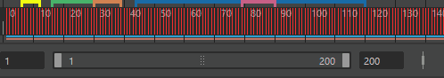

通过 Maya 的动画控件，可以为对象设定关键帧，管理场景的时间轴以及播放动画。另请参见动画控件。
显示“时间滑块”(Time Slider)
- 可以通过选择“窗口 > UI 元素 > 时间滑块”(Windows > UI Elements > Time Slider)隐藏或显示“时间滑块”(Time Slider)。
隐藏“时间滑块”(Time Slider)可提供更多 Maya 视图空间。另请参见“时间滑块”(Time Slider)。
显示范围滑块
- 可以通过选择“窗口 > UI 元素 > 范围滑块”(Windows > UI Elements > Range Slider)隐藏或显示“范围滑块”(Range Slider)。
隐藏范围滑块也将隐藏“动画首选项”(Animation Preferences)按钮和“自动关键帧”(Auto Key)按钮。有关详细信息，请参见范围滑块。
更改当前时间
- 单击“时间滑块”(Time Slider)上的任意位置。
使用鼠标单击的位置将变成当前时间，且场景将跳至动画中该时间处。
- 执行下列操作之一：
- 在“时间滑块”(Time Slider)中拖动鼠标。
- 按住 K 键，同时在任何视图中水平拖动。
场景会随鼠标操作进行更新。
- 在“时间滑块”(Time Slider)中单击鼠标中键。
- 按住 K 键，并按住鼠标中键在任何视图中水平拖动。
场景不会更新，但当前时间指示器会移动以显示新的当前时间。例如，如果希望基于其他对象的先前位置在某些帧处设置对象的关键帧，该操作会很有用。有关详细信息，请参见“时间滑块”(Time Slider)。
注：
- K 键操作在显示时间轴的所有 Maya 窗口（例如，“曲线图编辑器”(Graph Editor)）中进行相同的处理。
- 在播放选项中更改场景的帧速率。
使用范围滑块栏可以将动画的播放范围控制在“动画开始/结束”(Animation Start/End)设置的限制之下。有关详细信息，请参见范围滑块。
使用范围滑块更改播放范围
- 执行下列操作之一：
- 拖动范围滑块栏来移动它。
- 拖动范围滑块末端的框以调整播放范围。
- 双击范围滑块栏可将播放范围设定为“首选项”(Preferences)窗口的“动画开始/结束”(Animation Start/End)字段中的范围值。若要返回到先前的播放范围，请再次双击范围滑块栏。请参见“时间滑块”(Time Slider)首选项。

使用“时间滑块”(Time Slider)移动和缩放动画的范围
- 按住 Shift 键并沿“时间滑块”(Time Slider)拖动以选择一个时间范围，或双击“时间滑块”(Time Slider)以选择整个范围。
选定的时间范围为红色，开始帧和结束帧在选择块的末端以白色数字显示。请参见“时间滑块”(Time Slider)。
- 执行下列操作之一：
- 若要在“时间滑块”(Time Slider)的选定范围内缩放关键帧，请在选定范围的任意一端拖动箭头。
- 若要在选定范围内沿“时间滑块”(Time Slider)移动关键帧，请在当前选择的中心处拖动双箭头。
提示： 启用“自动捕捉关键帧”(Auto snap keys)（“窗口 > 设置/首选项 > 首选项 > 时间滑块”(Windows > Settings/Preferences > Preferences > Time Slider)）以确保选定范围内的关键帧捕捉到最近的整帧。 如果在缩放期间两个关键帧落在同一帧上，它们将合并为一个关键帧。